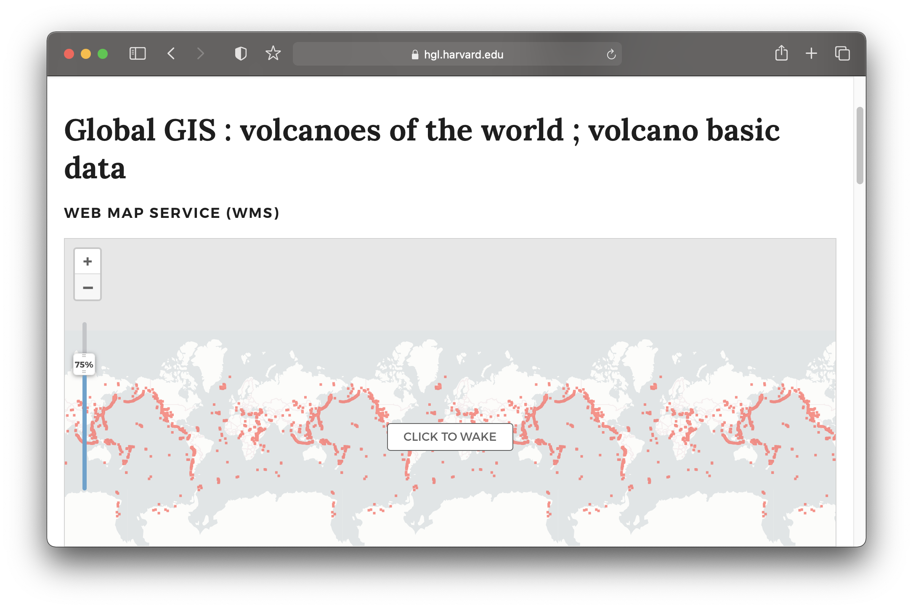

Fall 2022 Harvard Map Collection
Services


 Record from Harvard Map Collection card catalog
.
Record from Harvard Map Collection card catalog
.
Formats
 Tutorial
for how to use Harvard Libraries digital collections items
in Allmaps
Tutorial
for how to use Harvard Libraries digital collections items
in Allmaps
Working with 19th century map layers of Boston .

Concepts
 Ancestral characteristics of Modern Populations
dataset.
Ancestral characteristics of Modern Populations
dataset.
Map by Leo Saenger, applied mathematics.
Landscape
 The Library of Missing Datasets
by Mimi Ọnụọha.
The Library of Missing Datasets
by Mimi Ọnụọha.
 Global volcanoes dataset in the Harvard Geospatial Library (HGL).